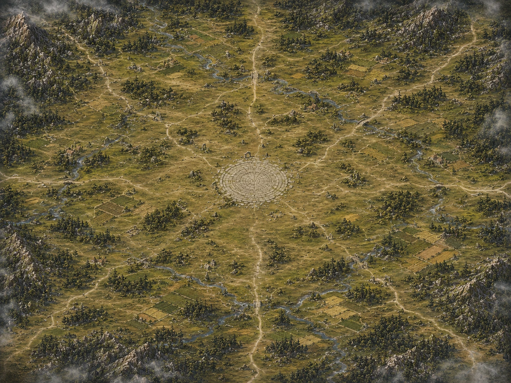
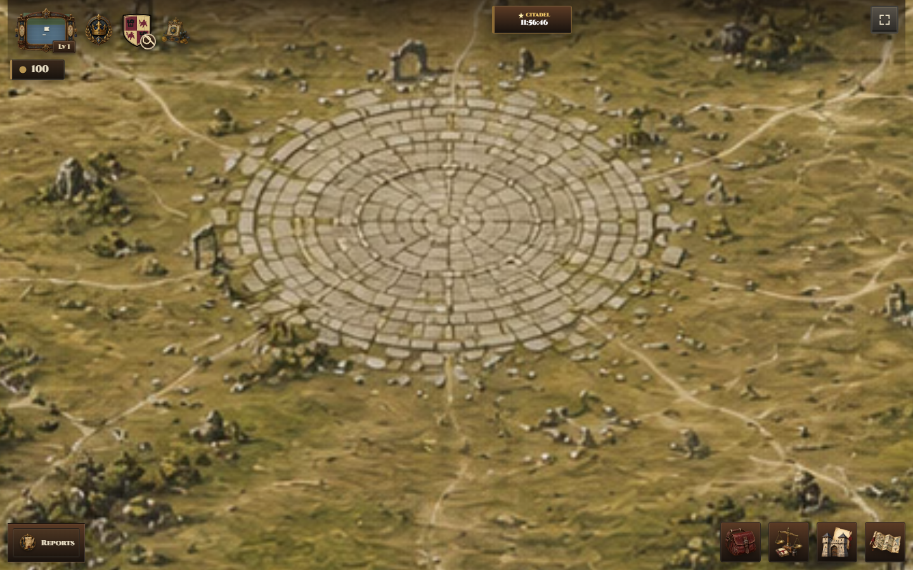
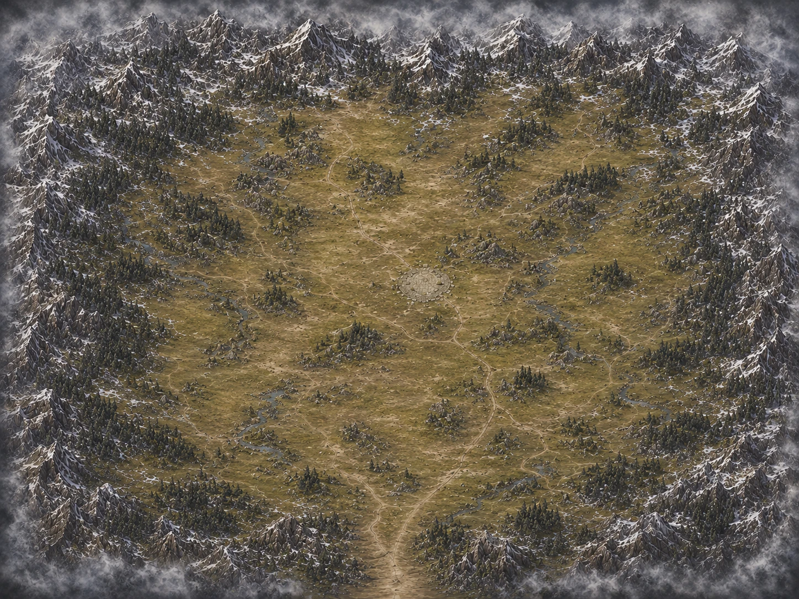
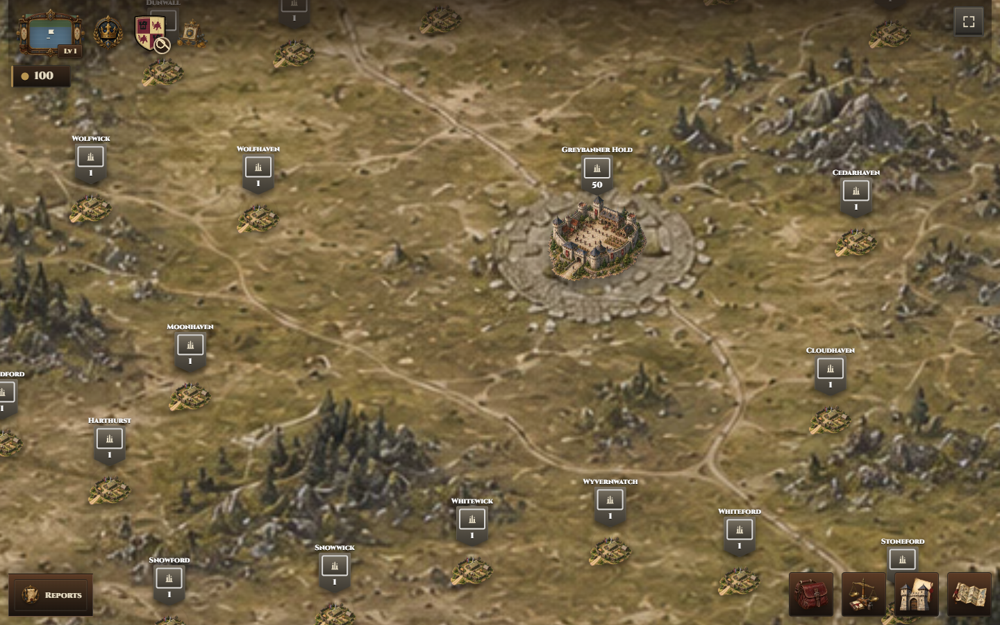
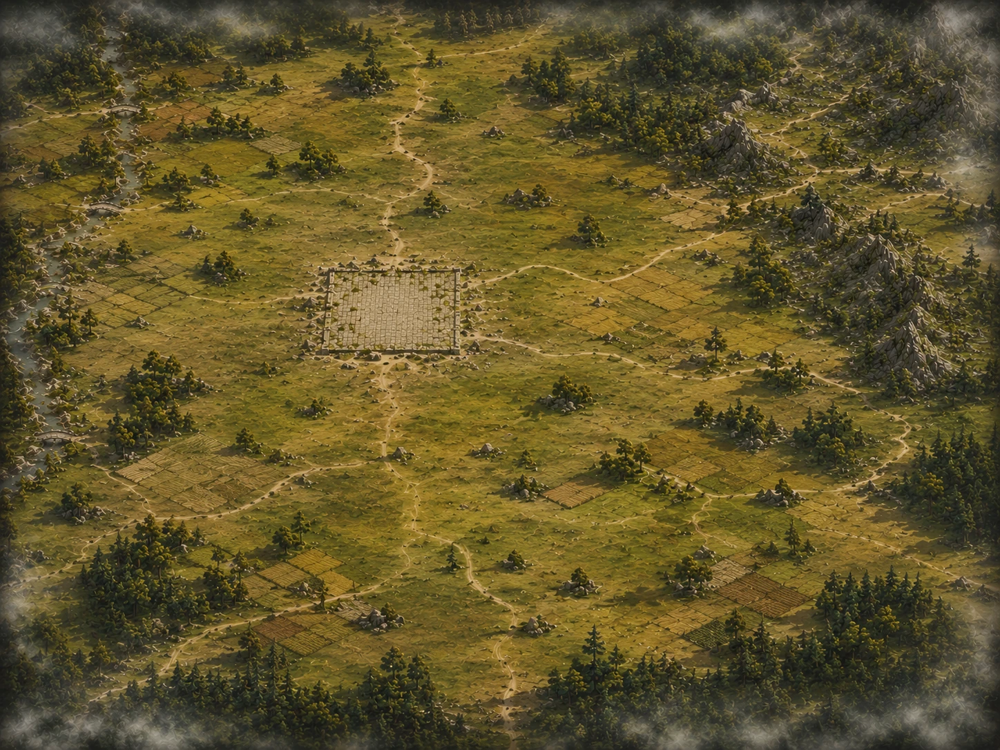
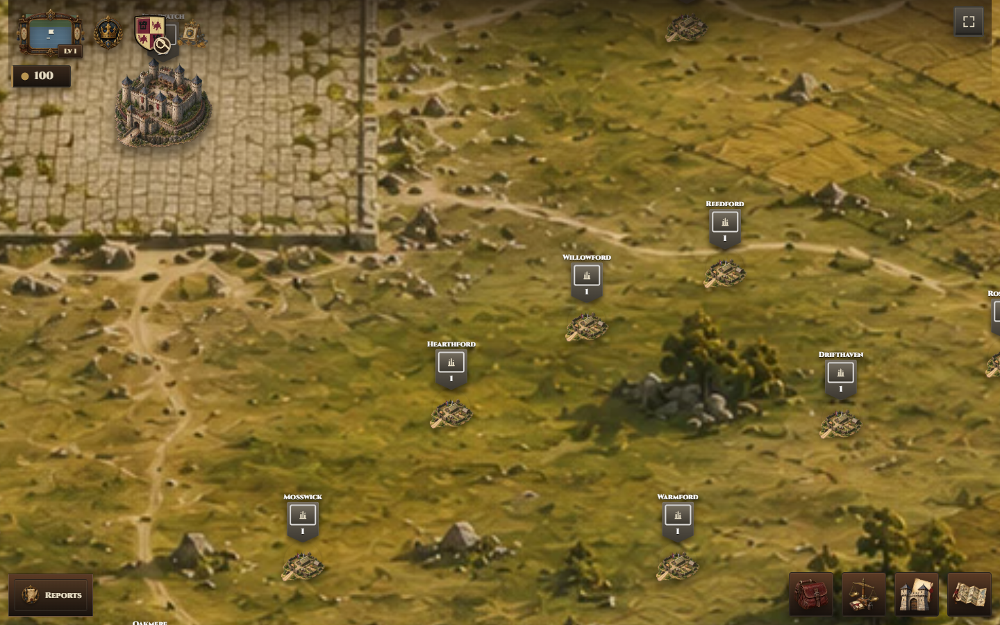
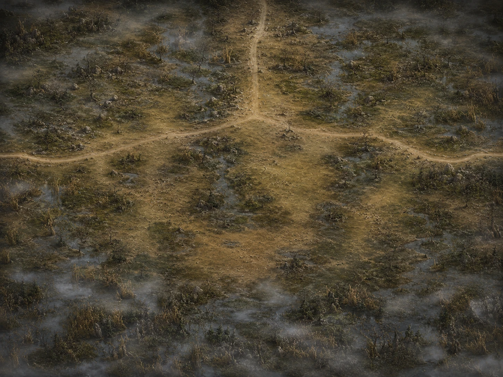
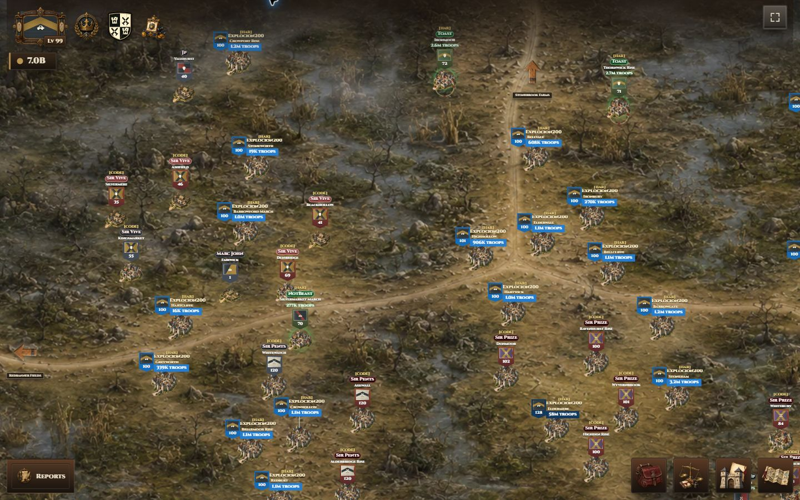
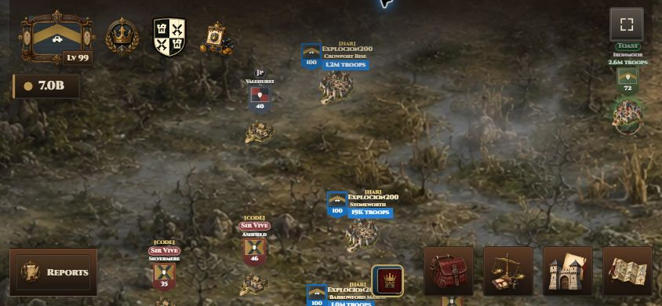

The left image in each row is the exact restored source used to derive the Map UI preview. The right image is authenticated live gameplay or the automated path-verification record. Runtime maps use immutable content-fingerprinted URLs.
Crownlands Heart

Restored Map UI/source art

Actual gameplay renderer at 1440x900
North Frontier

Restored Map UI/source art

Actual gameplay renderer at 1440x900
Southfields

Restored Map UI/source art

Actual gameplay renderer at 1440x900
Ashenfen March

Restored Map UI/source art

Authenticated gameplay at 1440x900

Authenticated gameplay at Android landscape 844x390